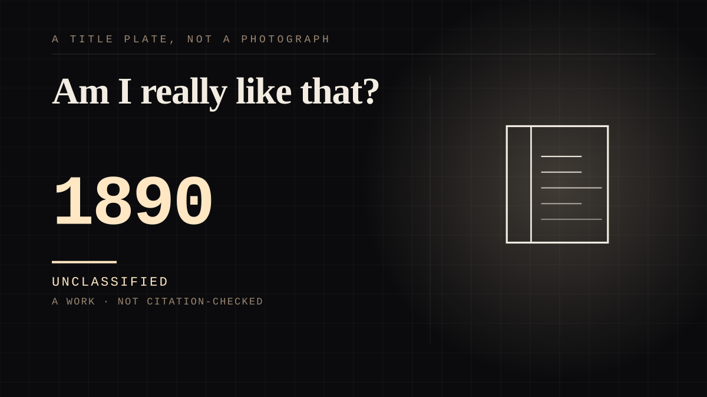

A work · 1890 · Modern
Am I really like that?
The painter stands in front of the figure he made and asks whether the man is really like it. He is. And it will never alter, which is the only thing about it anybody wanted.

The purest statement of the mirrored case ever written, and it is four lines of dialogue rather than an argument. Basil Hallward has painted the man he loves and the painting will not age, and when the original walks over to the canvas and asks the only question that matters - 'Am I really like that?' - the painter answers 'Yes; you are just like that' and then, 'At least you are like it in appearance. But it will never alter.' The real man is standing right there. He is also the wrong one. Wilde's book is about a portrait that takes the ruin instead, and the two sentences above are why anybody wants it: every bond on this site wants the other end to be permanent, and here is a version where permanence is available and it is attached to the wrong object. Dorian's own side of it is the jealousy that names the mechanism exactly - 'I am jealous of everything whose beauty does not die. I am jealous of the portrait you have painted of me. Why should it keep what I must lose? Every moment that passes takes something from me and gives something to it.' He wants to be the copy. The most damning detail is a mirror. Having seen the cruelty in the painted mouth, he takes up a glass and looks at his own red lips to check, and they are fine: 'No line like that warped his red lips.' The mirror is the one witness that could have settled it and it exonerates him. He is not permitted to be the evidence about himself. That is what the third axis calls mirrored - the figure supplied by the person attached to it, edited toward what the attachment needs, with the original never consulted - and Wilde wrote it in 1890, a hundred and thirty years before anybody had a word for it. First published in the July 1890 issue of Lippincott's Monthly Magazine, the only novel Wilde ever wrote.
Where it sits
1800 1800-1899 · 1890 1899
Provenance · 2 source record(s)
- retrievableThe dialogue, quoted exactly from the full text. Hallward: 'I shall stay with the real Dorian,' he said, sadly. 'Is it the real Dorian?' cried the original of the portrait, strolling across to him. 'Am I really like that?' 'Yes; you are just like that.' 'How wonderful, Basil!' 'At least you are like it in appearance. But it will never alter,' sighed Hallward. 'That is something.' Dorian: 'I am jealous of everything whose beauty does not die. I am jealous of the portrait you have painted of me. Why should it keep what I must lose? Every moment that passes takes something from me and gives something to it. Oh, if it were only the other way! If the picture could change, and I could be always what I am now!' And the mirror, in the same book: 'the lines of cruelty round the mouth as clearly as if he had been looking into a mirror after he had done some dreadful thing. He winced and, taking up from the table an oval glass framed in ivory Cupids, one of Lord Henry's many presents to him, glanced hurriedly into its polished depths. No line like that warped his red lips.'Wilde, O. The Picture of Dorian Gray. Project Gutenberg eBook 174 (full text). ↗
- retrievablePublication history: an 1890 philosophical fiction and Gothic horror novel by Oscar Wilde; a shorter novella-length version was published in the July 1890 issue of Lippincott's Monthly Magazine, the novel-length version in April 1891. It is the only novel Wilde wrote. The story concerns a portrait of Dorian Gray painted by Basil Hallward, 'a friend of Dorian's and an artist infatuated with Dorian's beauty' - the description is the bond, stated by the encyclopedia's own lead.The Picture of Dorian Gray. Wikipedia. ↗
Not yet stood behind. The entry is real. A person has not read the citation and confirmed it, so treat the date as approximate until they do.
CHARACTER The written character
Connected · 2 out, 1 in
It sits in
The full timeline → · The database → · See it in the atlas →